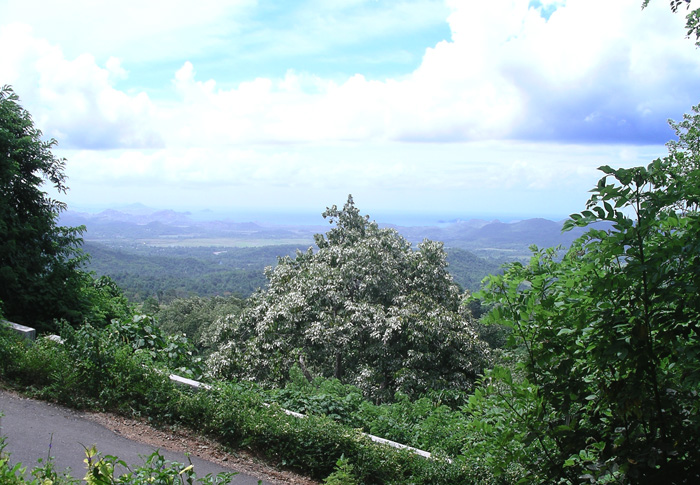
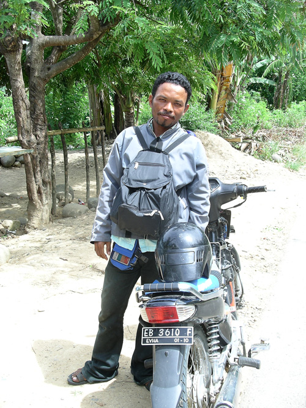
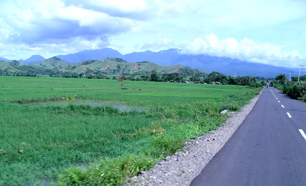
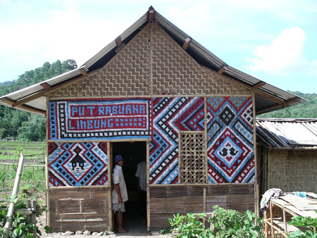
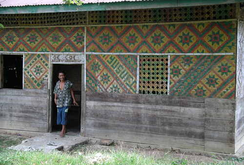
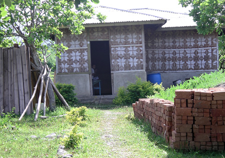
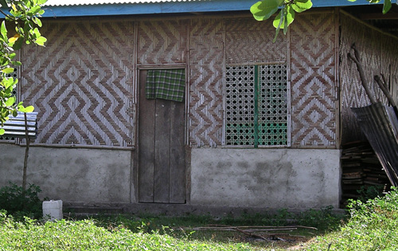
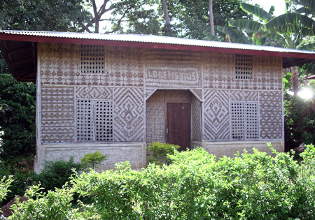
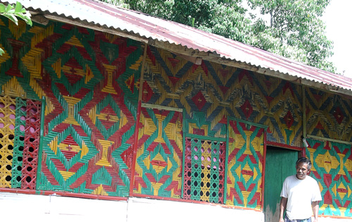

Indonesia Trav-E-Logs ©
Labuan Bajo to Ruteng Road, Flores
|  | |
| back:Lembata - Wairiang | Flores is one gorgeous island from tip to tip. |
================================= After the debacle in Timore Leste which forced me to fly to Bali, had to backtrack to Flores to finnish the Woven Bamboo Home Project. The Pelni ship put me at the western end of the island, from where a round trip had to be planned. =================================
January, 2007
|
The Pelni ship Tilonkabila sailed from Benoa, Bali to Labuan Bajo, Flores arriving in the early evening. To my suprise, the Pelni dock has been relocated to just a block from my old haunt, the Gardena Hotel. After a good night's sleep, hired another ojek to take me to Ruteng so that pictures could be taken along the road. Decided to leave my big pack at the Gardena, and just travel with a small day sack and a computer backpack, as the Pelni office informs me that the dock in Ende is closed. This will lighten my load by about 38 pounds, making motorbike travel considerably easier. My long range plans had been to rent a motorbike and have total freedom of travel on Flores. However, after talking to other backpackers that had major problems with theft of motorbikes, decided that hiring a motorbike with driver had much less risk involved. Fortunately, my driver was kind and friendly -- typical of the people of Flores. The visor on the helmut he gave me to use was so fogged up, nothing could be seen clearly. No problem, he stops by a home and produces a much better helmut with clean visor for our trip. To the right, he posed for a photo by his bike. Traveling on the back of a motorbike is really a nice way to see the countryside. The mind can wander, as you are not distracted by he numberous obstructions in the road. Took this photo of the rice fields to remind me that rice in every stage of cultivation was observed: field flooding and preparation, planting, transplanting, young plants, mature fields, and harvesting. Even rice stalks were being burned in one location. Most of the other photos on this page are examples of bamboo homes on Flores. This also turned out to be the most prolific area of painted panels. Click here to open the special topic of "Bamboo Homes of Southeast Asia" in a new window. |
  |
|  |  |
|  |
 |
|  |
 |
Bill
------------------------------
Email me at: "juno.com" preceded by an "@" and "dancer2SEAsia"
"The backpacker discovers people are beautiful everywhere. It's the Governments that are evil."
| soon: Ende |
| back: Cebu |